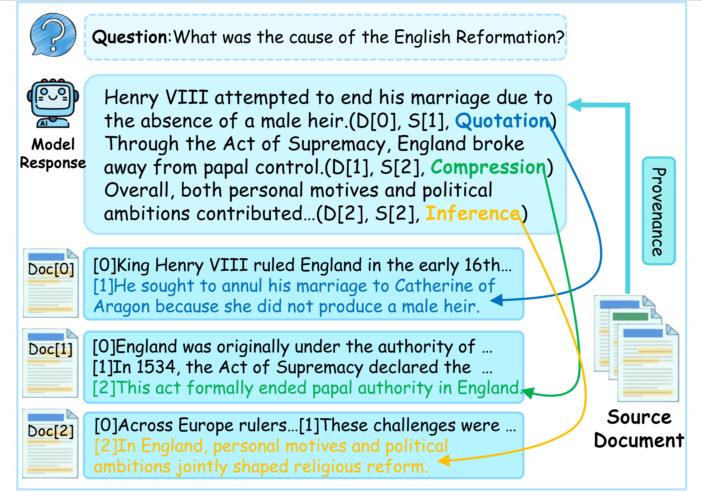

GenProve
Learning to Generate Text with Fine-Grained Provenance
1 Key Laboratory of Computing Power Network and Information Security, Ministry of Education, Shandong Computer Science Center (National Supercomputer Center in Jinan), Qilu University of Technology (Shandong Academy of Sciences)
2 Shenyang Institute of Computing Technology, Chinese Academy of Sciences
3 MAIS, Institute of Automation, Chinese Academy of Sciences
4 University of Chinese Academy of Sciences
† Equal contribution * Corresponding author
Abstract
Large language models (LLM) often hallucinate, and while adding citations is a common solution, it is frequently insufficient for accountability as users struggle to verify how a cited source supports a generated claim. Existing methods are typically coarse-grained and fail to distinguish between direct quotes and complex reasoning.

In this paper, we introduce Generation-time Fine-grained Provenance, a task where models must generate fluent answers while simultaneously producing structured, sentence-level provenance triples.
To enable this, we present ReFInE (Relation-aware Fine-grained Interpretability & Evidence), a dataset featuring expert-verified annotations that distinguish between Quotation, Compression, and Inference. Building on ReFInE, we propose GenProve, a framework that combines Supervised Fine-Tuning (SFT) with Group Relative Policy Optimization (GRPO). By optimizing a composite reward for answer fidelity and provenance correctness, GenProve significantly outperforms 14 strong LLMs in joint evaluation.
Crucially, our analysis uncovers a reasoning gap where models excel at surface-level quotation but struggle significantly with inference-based provenance, suggesting that verifiable reasoning remains a frontier challenge distinct from surface-level citation.
Key Contributions
Novel Task Formulation
We define Generation-time Fine-grained Provenance, shifting from coarse document-level citations to sentence-level attribution with explicit relation typing.
ReFInE Dataset
We release the first expert-annotated QA dataset that provides dense, typed provenance supervision for multi-document generation.
GenProve Framework
We propose an integrated SFT with GRPO alignment approach to master structured provenance generation.
The ReFInE Dataset
Most existing benchmarks are designed for analysis after generation or lack structured supervision on evidence types. To bridge this gap, we construct ReFInE (Relation-aware Fine-grained Interpretability & Evidence). Built via a rigorous human-in-the-loop pipeline, the dataset features three distinct provenance relations:
Quotation
The answer sentence partially or fully copies the wording of the source sentence.
Compression
The answer sentence summarizes or paraphrases information distributed across source sentences.
Inference
The answer sentence states a conclusion logically supported by source sentences.

Dataset Statistics
| Split | Instances | % of Total | Quotation | Compression | Inference |
|---|---|---|---|---|---|
| SFT | 12,540 | 55.4% | 32.88% | 7.93% | 12.59% |
| GRPO | 5,256 | 23.22% | 11.09% | 4.81% | 7.32% |
| EVAL | 4,838 | 21.38% | 13.47% | 3.16% | 4.76% |
Quotation dominates across all splits. GRPO allocates a larger share to Inference and Compression than EVAL, making it more suitable for optimizing reasoning and abstraction under sentence-level evidence constraints. On average, each answer contains 3.96 provenance tags, with each tag aggregating 1.98 provenance triples.

Comparison with Existing Benchmarks
Table 5 compares ReFInE with representative citation-aware and provenance benchmarks along axes central to fine-grained accountability. We use ✓/✗ to denote Yes/No. "Avg. citations" denotes the average number of provenance triples or their equivalents in the reference answers. "Structured tags" indicates metadata-rich provenance tags (DocID, SentID, Relation) rather than plain indices. ReFInE distinguishes itself by enforcing generation-time, sentence-level provenance with explicit relation typing.
| Benchmark | Year | #Rel | Avg. Citations | Sent.-level | Simul. | Generative | Structured Tags | Typed Relations |
|---|---|---|---|---|---|---|---|---|
| Explicit dataset (Xing et al., 2020) | 2020 | 1 | 1.00 | ✗ | ✗ | ✓ | ✗ | ✗ |
| FEVER (Chen et al., 2022) | 2022 | 3 | 1.86 | ✓ | ✗ | ✗ | ✗ | ✗ |
| ASQA (Gao et al., 2023) | 2023 | 1 | 0 | ✓ | ✓ | ✓ | ✗ | ✗ |
| WikiRetr (Li et al., 2024b) | 2024 | 2 | 1 | ✓ | ✗ | ✓ | ✗ | ✗ |
| SCiFi (Cao and Wang, 2024) | 2024 | 1 | 1.86 | ✗ | ✓ | ✓ | ✗ | ✗ |
| ELI5 (Hsu et al., 2024) | 2024 | 1 | 0 | ✓ | ✗ | ✓ | ✗ | ✗ |
| FRONT (Huang et al., 2024) | 2024 | 1 | 4.40 | ✓ | ✓ | ✓ | ✗ | ✗ |
| MDS (Slobodkin et al., 2024) | 2024 | 1 | 3.00 | ✓ | ✗ | ✓ | ✗ | ✗ |
| CG (Li and Chen, 2025) | 2025 | 3 | 1.00 | ✓ | ✗ | ✓ | ✗ | ✓ |
| TROVE (Zhu et al., 2025) | 2025 | 4 | 1.97 | ✓ | ✗ | ✗ | ✓ | ✓ |
| ReFInE (Ours) | — | 3 | 7.64 | ✓ | ✓ | ✓ | ✓ | ✓ |
Example Instances
Each ReFInE instance pairs a user question with multiple source documents and a reference answer, where every sentence carries a provenance annotation linking it to source sentences. Below are examples illustrating the three relation types.
Quotation Example
Q: When was the Xbox One released?
Source Documents:
Doc[0]: [0] The Xbox One was released in North America, Europe, and Australia on November 22, 2013…and was later released in 26 other markets in 2014. [1] It had two mid-generation upgrades…
Doc[1]: [0] The PlayStation 4 was released on November 15, 2013, in North America and… [1] Section: Home consoles…
Doc[2]: [0] ReCore was first revealed at E3 2015 during Microsoft… [1] At the conclusion of the debut trailer Microsoft…
A: The Xbox One was released on November 22, 2013, in North America, Europe, and Australia. (Doc[0], Sen[0], Quotation)
It was later released in 26 other markets in 2014. (Doc[0], Sen[0], Quotation)
Compression Example
Q: Who hosted the Late Late Show after Tom Snyder?
Source Documents:
Doc[0]: [0] The Late Late Show (American talk… [1] with host Tom Snyder, followed by Craig Kilborn and Craig Ferguson. [2] It is currently hosted by James Corden…
Doc[1]: [0] In 1986, the Fox network introduced The Late Show… [1] After a moderate start, ratings for the show sagged…
Doc[2]: [0] Tom Snyder hosted the program from its inception… [1] The choice of Snyder as host was made by David…
A: After Tom Snyder stepped down as the original host, The Late Late Show experienced several hosting transitions, with Craig Kilborn and later Craig Ferguson successively taking over the program, before eventually settling on its current host, James Corden, who continues to lead the show today. (Doc[0], Sen[1], Compression), (Doc[0], Sen[2], Compression)
Inference Example
Q: Who has scored the most hat-tricks in the Premier League?
Source Documents:
Doc[0]: [0] List of Premier League hat-tricks Since the inception of… [1] The first player to achieve the feat was Frenchman Eric…
Doc[1]: [0] List of England national football team hat-tricks Since… [1] The first players to score a hat-trick for England were…
Doc[2]: [0] Shearer and Sergio Agüero have scored three or more goals eleven times in the… [1] Robbie Fowler has scored nine; Thierry Henry and Michael Owen have scored eight hat-tricks each…
A: According to the document, five players have scored the most hat-tricks in the Premier League, with each player scoring eleven hat-tricks: Alan Shearer, Sergio Agüero, Robbie Fowler, Thierry Henry, and Michael Owen. (Doc[2], Sen[0], Inference), (Doc[2], Sen[1], Inference)
The GenProve Framework
GenProve is a two-step training framework that enables a model to generate answers with fine-grained provenance. Given a question Q and a document collection D, the model produces an answer A where each sentence is accompanied by a set of provenance triples identifying supporting source sentences and their relation types.

Step 1: Supervised Fine-Tuning (SFT)
SFT serves as a foundational warm-up stage primarily designed to enforce structure adherence and provide stable format grounding. It trains the base model to follow instructions and emit well-formed provenance annotations together with fluent answers, so that the subsequent RL stage can focus on reward-driven refinement rather than basic schema learning.
Starting from Qwen3-8B, we perform full-parameter optimization with AdamW (lr = 2×10-5), a maximum sequence length of 2048, and an effective batch size of 16.
Step 2: GRPO-based Reinforcement Learning
Reinforcement learning improves provenance accuracy and reduces unsupported statements by optimizing a composite reward. Starting from the SFT policy, we sample a group of candidate answers for each input and update the policy using Group Relative Policy Optimization (GRPO), with temperature = 1, β = 0.02, and 4 iterations per update.
Reward Design
The composite reward combines two complementary components:
Reward A: Content Similarity
For each generated sentence, we find the best-matching reference sentence by cosine similarity between Sentence-Transformer embeddings. If similarity exceeds τc = 0.45, we compute ROUGE-L between the matched pair. This reward encourages semantic alignment with the reference while preserving sentence-level structure.
Reward B: Provenance F1
For each reference sentence, we retrieve the closest generated sentence by cosine similarity (threshold τp = 0.50). We compare provenance sets and compute sentence-level precision, recall, and F1 over the triples (DocID, SentID, Relation). This reward encourages correct provenance triples and relation types.
The composite reward is: R = α · Rsim + β · Rprov, balancing content fidelity and provenance correctness. This design penalizes common failure modes including incorrect relation typing and unsupported or out-of-document provenance.
Experimental Results
We evaluate 14 LLMs, covering both open- and closed-source systems. Results show that GenProve establishes a new state-of-the-art, significantly outperforming competitors in both answer quality and provenance accuracy.
| Model | ROUGE-L↑ | BLEU↑ | METEOR↑ | MoverScore↑ | Prec.↑ | Rec.↑ | F1↑ | Format (%)↑ | Judge (1–5)↑ |
|---|---|---|---|---|---|---|---|---|---|
| Baichuan2-7B | 34.68 | 19.41 | 48.08 | 32.03 | 3.22 | 3.41 | 3.04 | 26.60 | 0.78 |
| Vicuna-7b-v1.5 | 38.83 | 24.37 | 50.08 | 34.73 | 9.01 | 5.85 | 6.70 | 92.40 | 1.10 |
| InternLM2.5-7B | 47.79 | 30.60 | 53.47 | 43.60 | 12.64 | 13.35 | 11.94 | 80.24 | 1.67 |
| Hunyuan-7B | 39.91 | 24.70 | 43.74 | 32.99 | 22.78 | 22.86 | 21.43 | 90.88 | 1.72 |
| Yi-1.5-9B | 48.26 | 30.11 | 47.77 | 43.35 | 20.71 | 22.91 | 20.11 | 96.81 | 1.80 |
| Llama-3.1-8B | 47.71 | 26.36 | 42.04 | 41.14 | 21.78 | 20.30 | 20.05 | 99.85 | 2.00 |
| GLM-4-9B | 50.33 | 32.62 | 50.00 | 44.93 | 34.57 | 34.12 | 32.79 | 100.0 | 2.16 |
| Qwen3-8B | 51.80 | 35.56 | 55.38 | 45.90 | 37.78 | 30.56 | 32.53 | 100.0 | 2.25 |
| Gemma-3-12B | 48.97 | 32.13 | 50.80 | 43.79 | 41.06 | 31.11 | 34.03 | 100.0 | 2.47 |
| Qwen3-14B | 52.85 | 35.70 | 55.34 | 47.06 | 45.80 | 40.33 | 41.16 | 99.70 | 2.59 |
| GLM-4.5-355B | 49.81 | 35.05 | 57.69 | 44.92 | 48.84 | 44.03 | 44.55 | 98.63 | 2.63 |
| Kimi | 49.33 | 31.24 | 51.56 | 43.84 | 31.55 | 32.09 | 29.70 | 99.09 | 2.20 |
| GPT-5 | 41.79 | 20.01 | 38.83 | 36.38 | 21.37 | 16.73 | 17.88 | 99.85 | 2.23 |
| Gemini 2.5 Pro | 48.75 | 31.77 | 53.09 | 44.79 | 46.68 | 42.86 | 42.92 | 100.0 | 2.57 |
| GenProve (Ours) | 57.25 | 42.22 | 59.39 | 51.04 | 54.96 | 51.26 | 51.21 | 99.85 | 3.14 |
Table 1: Main results on ReFInE. GenProve consistently outperforms strong open-source and closed-source LLMs across answer quality (ROUGE-L, BLEU, METEOR, MoverScore), provenance accuracy (Precision, Recall, F1), format validity, and LLM-as-judge evaluation. Provenance F1 shows the largest margin over the strongest baseline, indicating substantially more accurate sentence-level evidence localization and relation typing.
Performance by Relation Type
.jpg)
GenProve achieves 65.31 Quotation F1, 25.82 Compression F1, and 29.36 Inference F1 — showing the largest gains on complex provenance tasks.
GRPO Training Dynamics

Both content similarity and provenance F1 rewards increase and stabilize during GRPO alignment, indicating coordinated dual-objective optimization.
Ablation Study
| Model Variant | BLEU | BERTScore | F1 | Format | Judge |
|---|---|---|---|---|---|
| GenProve | 42.22 | 61.98 | 51.21 | 99.85 | 3.14 |
| w/o Prov Reward | 11.94 | 46.96 | 24.67 | 96.66 | 2.20 |
| w/o Sim Reward | 24.60 | 44.50 | 60.32 | 95.74 | 2.71 |
| w/o GRPO | 41.82 | 60.70 | 50.48 | 99.70 | 2.62 |
Document-Level Citation Benchmark
For direct comparison with prior document-level citation methods, we collapse sentence-level provenance to cited document sets. GenProve achieves the best performance across all metrics, reaching 94.45 Doc-Precision, 93.16 Doc-Recall, and 92.43 Doc-F1 — a gain of 11.33 Doc-F1 over the previous state of the art (GERE).
| Model | Doc-Precision↑ | Doc-Recall↑ | Doc-F1↑ |
|---|---|---|---|
| VANILLA (Gao et al., 2023) | 72.50 | 73.60 | 73.05 |
| SUMM (Gao et al., 2023) | 68.90 | 61.80 | 65.16 |
| SNIPPET (Gao et al., 2023) | 65.30 | 57.40 | 61.10 |
| APO (Li et al., 2024a) | 69.60 | 72.80 | 71.20 |
| VeriCite (Qian et al., 2025) | 74.61 | 81.13 | 77.73 |
| GERE (Chen et al., 2022) | 84.43 | 78.01 | 81.10 |
| GenProve (Ours) | 94.45 | 93.16 | 92.43 |
LLM-as-a-Judge Breakdown
We decouple evaluation into text generation quality and traceability quality using two specialized LLM judges, enabling finer-grained diagnosis of model errors.
| Model | Text Quality | Prov. Quotation | Prov. Compression | Prov. Inference | Avg |
|---|---|---|---|---|---|
| GLM-4.5-355B | 4.29 | 4.13 | 0.91 | 0.79 | 2.63 |
| Gemma-3-12B | 3.97 | 4.03 | 1.06 | 0.42 | 2.47 |
| Qwen3-14B | 4.10 | 4.06 | 1.56 | 0.21 | 2.59 |
| Gemini 2.5 Pro | 4.24 | 4.33 | 1.09 | 0.19 | 2.57 |
| GPT-5 | 4.14 | 2.39 | 1.97 | 0.29 | 2.23 |
| GenProve | 3.98 | 4.43 | 2.45 | 1.40 | 3.14 |
GenProve shows particularly large gains in complex Compression and Inference relations, where most baselines struggle significantly.

Error Analysis
Diagnostic analysis reveals a clear difficulty ordering across relation types and identifies three common error patterns in fine-grained provenance generation.
Three Common Error Patterns
Unsynchronized Provenance
The model produces answer content and provenance tags in an unsynchronized manner — provenance annotations are delayed or structurally detached from the sentences they support, resulting in outputs that are only partially traceable.
Q: What is the name of the roller coaster built by Giovanola of Switzerland at Six Flags Over Texas?
Source Documents:
Doc[2]: [0] Six Flags Over Texas had plans to add a… [1] An early proposal from Arrow Dynamics showed…
Model: The name of the roller coaster built by Giovanola of Switzerland at Six Flags Over Texas is Titan. [Missing provenance tag]
Ground Truth: The name of the roller coaster built by Giovanola of Switzerland at Six Flags Over Texas is Titan. ("0","0","Compression"), ("0","1","Compression")
Incomplete Coverage
The model produces factually plausible answer sentences but omits provenance tags for some of them. This breaks sentence-level verifiability even when the content is supported by the source documents.
Q: Who was the first non-European to win the Ballon d'Or?
Source Documents:
Doc[0]: [0] Section: History. [1] Stanley Matthews of Blackpool was the inaugural winner of the Ballon d'Or.
Doc[1]: [0] Stanley Matthews of Blackpool was the inaugural winner of the Ballon d'Or. Prior to 1995… [1] Milan's George Weah, the only African recipient…
Doc[2]: [0] "The six editions of the FIFA Ballon d'Or... [1] Barcelona's Messi won the inaugural Ballon d'Or…
Model: The first non-European player to win the Ballon d'Or was George Weah of AC Milan. ("0","2","Quotation") [Missing: second sentence & provenance tag]
Ground Truth: The first non-European to win the Ballon d'Or was George Weah of Milan. He won the award in the year that the rules of eligibility were changed, making it possible for non-European players to be considered for the award. ("0","2","Quotation"), ("1","1","Quotation")
Incorrect Localization
The model emits well-formed provenance tags, but the referenced document or sentence indices do not actually contain the supporting evidence. The cited source is often topically related but imprecise at the sentence level.
Q: What is the main food of a koala?
Source Documents:
Doc[0]: [0] Koalas are mainly distributed in the eastern coastal areas of Australia. [1] They typically inhabit open eucalyptus forests.
Doc[1]: [0] Koalas spend most of their time sleeping. [1] Koalas feed almost entirely on eucalyptus leaves. [2] Because eucalyptus leaves are low in nutrients, they need to conserve energy.
Doc[2]: [0] Eucalyptus trees dominate many Australian forest ecosystems. [1] These forests provide both shelter and food for several native species.
Model: Koalas primarily feed on eucalyptus leaves. ("0","1","Compression") [Wrong — Doc[0], Sen[1] discusses habitat, not diet]
Ground Truth: The main food source of koalas is eucalyptus leaves. ("1","1","Compression")
Key Insight: The Reasoning Gap
The heatmap (Figure 5) reveals a clear difficulty ordering: Quotation is easiest, while Compression and Inference are substantially harder. This indicates that models excel at surface-level copying but struggle with evidence abstraction, integration, and logical reasoning. GenProve achieves the strongest performance across all three relations, with its largest gains on the harder cases — reflecting improved evidence localization and relation typing where it matters most.
Limitations & Future Work
While GenProve establishes a new standard for fine-grained provenance, we identify three limitations to address in future work:
Inference Latency
Generating structured provenance triples inevitably increases the output token count compared to standard generation. Although essential for trustworthiness, this introduces a slight latency trade-off in real-time applications.
Linguistic Scope
Our current ReFInE dataset and evaluation primarily focus on English. Extending the Quotation-Compression-Inference taxonomy to multilingual or cross-lingual settings remains an open avenue for research.
Retrieval Dependency
Our framework focuses on the generation stage. Like all RAG systems, end-to-end performance is bounded by the quality of the retriever; if retrieved documents contain no relevant information, the model cannot generate valid provenance.
Looking Forward: We position ReFInE as a stepping stone towards self-auditing LLMs — models that not only generate knowledge but explicitly reason about the provenance of their own assertions. The performance gap between simple Quotation and complex Inference suggests that verifiable reasoning remains a frontier challenge for future research.
Citation
If you find our work helpful, please consider citing:
@article{wei2026genprove,
title={GenProve: Learning to Generate Text with Fine-Grained Provenance},
author={Wei, Jingxuan and Wang, Xingyue and Liao, Yanghaoyu and Dong, Jie and Liu, Yuchen and Jia, Caijun and Yu, Bihui and Zhu, Junnan},
journal={arXiv preprint arXiv:2601.04932},
year={2026}
}